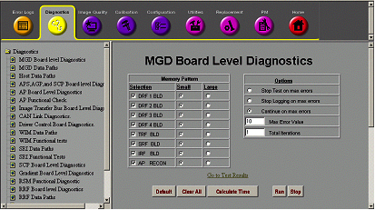
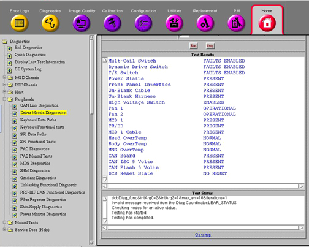
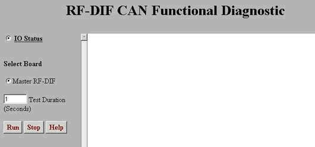
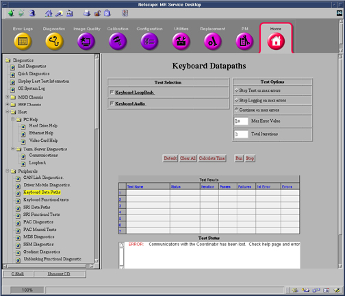
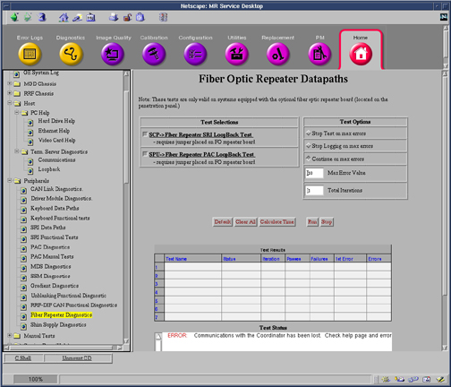

Proprietary to General Electric
Direction 5500113, Rev# 3
Discovery MR450 1.5T Service Methods
Module Version 1.0, Version Date 5/3/07
Proprietary to General Electric |
Diagnostics are available to check most parts of the system. The following sections describe these tests. This information is also available from the hyper-linked test names on the MR system (see Section 1 of Diagnostic Test Theory and Help Information).
These diagnostics allow individual testing of the DRF (1-4), TRF, SRF and , IRF Boards, and the AP Board(s) in the MGD Chassis. See Illustration 1. Test options are provided on the right side of the screen. Refer to Table 1 for test descriptions.
Illustration 1: MGD BLD MENU

Table 1: MGD BLD DIAGNOSTIC TESTS
| TEST NAME | TEST DESCRIPTION |
| DRF 1 BLD | Tests the first DRF1 Board found. This is right-most board in slots 4-7. In an MGD Chassis configured for 4 receive channels this will be the DRF1 Board in slot 2. In an MGD Chassis configured for 8 receive channels this will be the DRF1 Board in slot 7. The APS tests the onboard memory and HPI interface. It also performs a test of the DMA. |
| DRF 2 BLD | Tests the second DRF1 Board found. This is the board directly to the left of the DRF1 Board designated DRF 1. The APS tests the onboard memory and HPI interface. It also performs a test of the DMA. |
| DRF 3 BLD | Tests the third DRF1 Board found. This is the board directly to the left of the DRF1 Board designated DRF 2. The APS tests the onboard memory and HPI interface. It also performs a test of the DMA. |
| DRF 4 BLD | Tests the fourth DRF1 Board found. This is the board directly to the left of the DRF1 Board designated DRF 3. Because there are only 4 slots for the DRF1 Boards and this is the fourth board DRF 4 should normally be located in slot 4. The APS tests the onboard memory and HPI interface. It also performs a test of the DMA. |
| TRF BLD | The APS or AGP tests functionality of the TRF hardware. |
| SRF BLD | The AGP tests the functionality of the onboard memory, and various registers. |
| IRF BLD | The AGP tests the functionality of the onboard memory, various registers, Xmit attenuation Look-Up Table, and the various board FIFOs. |
| AP RECON | The test sends a raw image test file through the image reconstruction
process and compares the result to a known good processed image file. If
the output “image” does not match the known good “image”
bit-for-bit then the test fails. The “image” is not reconstructable
and will not be displayed. The process is as follows:
|
Refer to Illustration 2. These diagnostics allow the testing of the communication paths between various boards in the MGD Chassis. Data paths diagnostics are tests, which transfer data from one FRU to another for the purpose of validating the hardware. This is accomplished where possible by utilizing the application code in a similar manner, as it would be used for patient scanning. This serves two purposes. The first is to detect the same errors as the application code does. The added advantage here is the canned data, which can be validated once it reaches its destination. The second advantage is the ability to validate the software as well as the hardware. The intensity at which the diagnostic works can speed up the detection of timing related problems. Options can be selected from the right side of the window and Test Results and Test Status are reported at the bottom of the window. Refer to Table 2 for test descriptions. The Test Control Buttons function as described in Section 4, “Test Control Buttons,” in Running Diagnostics.
Illustration 2: MGD DATAPATH TESTS

Table 2: MGD DATAPATH TESTS
| TEST NAME | TEST DESCRIPTION |
| IRF -> DRF | Tests data path between the IRF and the DRF Boards. The test executes
in these steps:
|
| IRF -> IRF I/O | Tests data path between the IRF Board and the IRF I/O (rear MGD).
The test executes in these steps:
|
| SRF -> DRF | Tests data path between the SRF and the DRF Boards. The test executes
in these steps:
|
| SRF -> IRF | Tests data path between the SRF and the IRF Boards. The test executes
in these steps:
|
| SRF -> TRF | Tests data path between the SRF and the TRF Boards. Note that the
SRF and TRF Boards are physically included in one assembly and are one board
(SRF/TRF Board). The test executes in these steps:
|
| APS -> Bridge | Tests communication path between the APS Board and the Bridge Board (rear MGD). This tests the ability of the Bridge Board to be accessed and configured and its ability to provide communications to/from the primary and secondary interfaces. The Bridge Boards 21554 scratchpad registers, which reside in the Control/Status Register map, are used for this test. These registers are non-invasive to the operation of the 21554. The master processor (AGP or APS) that is selected by the operator executes the diagnostic. The slave processor is not used for this diagnostic. |
| AGP -> Bridge | Tests communication path between the AGP Board and the Bridge Board (rear MGD). See test explanation above. |
| APS -> AP | Tests communication path between the APS Board and the AP Board. |
Refer to Illustration 3. These diagnostics allow individual testing of the DIF, Receiver, Exciter, and UTNS Boards. Options can be selected from the right side of the window as described earlier. Refer to Table 3 for test descriptions. The Test Control Buttons function as described in Section 4, “Test Control Buttons, “ of Running Diagnostics.
Illustration 3: RRF BLD TESTS WINDOW

Table 3: DCB DIAGNOSTIC TESTS
| TEST NAME | TEST DESCRIPTION |
| DIF BLD |
|
| Receiver BLD |
|
| Exciter BLD |
|
| UTNS BLD |
|
Refer to Illustration 4. These diagnostics allow individual testing of the AGP, APS, and SCP Boards. Options can be selected from the right side of the window as described earlier. Refer to Table 4 for test descriptions. The Test Control Buttons function as described in Section 4, “Test Control Buttons,” of Running Diagnostics.
Illustration 4: MOTOROLA POWERPC BLD TESTS WINDOW

Once the selections are made, the test is started by selecting the [RUN] button in the middle of the window. The tests can be ended by selecting the [STOP] button located to the right of the [RUN] button.
When selected, the [ALL] button enables testing on all 3 boards.
When selected, the [Clear] button disables testing on all 3 boards.
Table 4: DCB DIAGNOSTIC TESTS
| TEST NAME | TEST DESCRIPTION |
| APS |
|
| AGP | Functions for AGP the same way as APS test except AGP is tested. See description for APS above. |
| SCP | Functions for SCP the same way as APS test except SCP is tested. See description for APS above. |
This diagnostic tests the functionality of the CAN Board daughter card that resides on the SCP Board in the MGD Chassis. This diagnostic first detects all the available nodes (in this case the Driver Control Module) on the CAN link by monitoring the Node Guarding messages. Once any nodes are detected, they are logged to the screen and then a data path test is run on each of them sequentially. The data path test consists of writing a walking one’s pattern on the Diagnostic Dictionary Index on the node and reading it back. The received data is checked to ensure its validity. The data path test is repeated three times on each node. Any errors will result in an error message logged and the information written to the screen. See Illustration 5.
Illustration 5: CAN LINK DIAGNOSTIC TEST

The [Force Reset] button will reset the CAN Link.
The [Run] button will start the execution of the diagnostic.
The [Stop] button will end execution of the diagnostic.
These diagnostics provide the ability to test the functionality of the Driver Control Module and components within this module. See Illustration 6. Refer toTable 5 for test descriptions.
Illustration 6: DCB DIAGNOSTIC WINDOW

Illustration 7 provides a display of what results should normally be seen, when running this diag in Product Configuration (the default selection). Note that all passing results are displayed in blue. Failing results are displayed in red. Product Configuration does not display the results from parts of the Driver Module that are not yet utilized. All results should be displayed in blue.
Illustration 7: SAMPLE PRODUCT CONFIGURATION DCB POWER SUPPLY DATA OUTPUT SCREEN

Illustration 8 provides a display of what results should be seen when running this in Full Configuration. Full Configuration tests all parts of the Driver Module, including those parts not yet used. Notice the failing items displayed in red ( MC2 POS 10V, and MC2 NEG 10V). Since none of the functions indicated by the failing red parameters are currently performed by the Driver Module, it is normal and expected to see these failures.
Illustration 8: SAMPLE DCB POWER SUPPLY DATA OUTPUT SCREEN

Illustration 9 provides an example display of what should be seen when running this diagnostic in Product Configuration. Again, normally all the results should be displayed in blue. Any failing results will be displayed in red. Don’t assume that failures reported here automatically mean that the Driver Module should be replaced. Try removing output cables to the Driver Module and run the diagnostic again. See if the results have changed. If they have, the problem may be external to the Driver Module.
Illustration 9: SAMPLE DCB IO STATUS OUTPUT SCREEN IN PRODUCT CONFIGURATION

Illustration 9 provides an example display of what should be seen when running this diagnostic in Full Configuration. Notice the failing items displayed in red (High Speed Cable, MCD 2, and MCD 2 Cable). Again, these failures are normal in Full Configuration since these functions are for future use. Finally, be aware that if the CAN Communication Core (CCC) Board fails then a message indicating that the CAN Link has failed will be displayed in the Test Results window instead of the IO Data.
Illustration 10: SAMPLE DCB IO STATUS OUTPUT SCREEN 1

Illustration 11: SAMPLE DCB IO STATUS OUTPUT SCREEN 2

See a description of the remaining tests in Table 5.
Table 5: DCB DIAGNOSTIC TESTS
| TEST NAME | TEST DESCRIPTION | ||
| Power Supply Data | This diagnostic reads the Power Supply information from the DCB board every 5 seconds for the specified Test Duration (max 300 secs). The values are checked against the tolerances listed in the DcbConfig.cfg file. Any failing values will be printed out in red. Passing values will be printed out in blue. No error messages will be logged for failing power supplies since the Applications Code will be logging these errors automatically. See sample screen and comments in Step . | ||
| I/O Status | This diagnostic reads the I/O Bit map information from the DCB board every 5 seconds for the specified Test Duration (max 300 secs). Each polled item and its status is printed in the window. Status messages displayed in red indicate an abnormal condition. See sample screen and comments in Step and descriptions in the table below. | ||
| Test | Test Purpose | Nominal Result | |
| Multi-Coil Switch | Check position of Switch SW 4 MC ENABLE | FAULTS ENABLED | |
| Dynamic Drive Switch | Check position of Switch SW 3 DD ENABLE (not used on Driver Modules (DMs) in systems with an SSM) | FAULTS ENABLED | |
| T/R Switch | Check position of Switch SW 2 TR ENABLE (not used on DMs in systems with an SSM) | FAULTS ENABLED | |
| Power Status | Check incoming power to DCB Board | PRESENT | |
| High Speed Cable | Check for external cable connected to J4. Future use. | NOT PRESENT | |
| Front Panel Interface | Check internal ribbon cable to Front Panal I/F | PRESENT | |
| Un-Blank Cable | Check for external cable connected to J19 | PRESENT | |
| Un-Blank Harness | Check connection of internal cable connection | PRESENT | |
| High Voltage Switch | Check position of Switch SW 1 HV ENABLE | FAULTS ENABLED | |
| Fan 1 | Fan 1 operation status. | OPERATIONAL | |
| Fan 2 | Fan 2 operation status. | OPERATIONAL | |
| MCD 1 | Check for presence of MCD 1 Board. | PRESENT | |
| MCD 2 | Check for presence of MCD 2 Board. Future use. | NOT PRESENT | |
| TR/DD | Check for presence of TR/DD Board. | PRESENT | |
| MCD 1 Cable | Check for external cable connected to J5 (MC1). | PRESENT | |
| MCD 2 Cable | Check for external cable connected to J10 (MC2). Future use. | NOT PRESENT | |
| Head Overtemp | Check temp. of TR/DD Board transistors. | NORMAL | |
| Body Overtemp | Check temp. of TR/DD Board transistors. | NORMAL | |
| MNS Overtemp | Check temp. of TR/DD Board transistors. | NORMAL | |
| CCC Board | Check for presence of CCC Board. | PRESENT | |
| CCC ISO 5 Volts | Check for presence of CCC Board ISO 5 Volts. | PRESENT | |
| CCC Flash 5 Volts | Check for presence of CCC Flash 5 Volts. | PRESENT | |
| DCB Reset State | Report state of Digital Control Board inside DM. | NO RESET | |
| Xpt Switch | This diagnostic runs the following patterns
on the Cross Point Switch LED’s every 5 seconds for the specified Test
Duration (max 300 secs):
| ||
| MCD Volt Test | This diagnostic outputs the multicoil
TR bias voltages listed below to the specified driver channels for measure
at MC1 J5 and MC2 J10 (future use only) on the rear of the Driver Module.
This test is helpful for dynamically checking the TR voltages using a DMM
or oscilloscope. See Table 6below
for J5 and J10 connection pinouts. The voltages will be present in the time
interval specified in Test Delay and unblanked for the period of time specified
in Un-blank Time. An Internal or External Un-blank signal can be specified
for use. The Internal Un-blank is generated inside the DM but cannot be used
outside the DM. The External Un-blank (RS-422 differential signal) can be
supplied by the FE between pins 1 and 6 at the J19, 9-pin, sub-D port. :
| ||
| MCD Channel Disable Test | This diagnostic outputs a positive TR bias voltage to the specified driver channels for measure at MC1 J5 and MC2 J10 (future use only) on the rear of the Driver Module. This test is helpful for dynamically checking the disable TR voltage using a DMM or oscilloscope. See Table 6 below for J5 and J10 connection pinouts. The voltage will be present in the time interval specified in Test Delay and unblanked for the period of time specified in Un-blank Time. An Internal or External Un-blank signal can be specified for use. The Internal Un-blank is generated inside the DM but cannot be used outside the DM. The External Un-blank (RS-422 differential signal) can be supplied by the FE between pins 1 and 6 at the J19, 9-pin, sub-D port. | ||
| MCD Channel Enable Test | This diagnostic outputs a negative TR bias voltage to the specified driver channels for measure at MC1 J5 and MC2 J10 (future use only) on the rear of the Driver Module. This test is helpful for dynamically checking the enable TR voltage using a DMM or oscilloscope. See Table 6 below for J5 and J10 connection pinouts. The voltage will be present in the time interval specified in Test Delay and unblanked for the period of time specified in Un-blank Time. An Internal or External Un-blank signal can be specified for use. The Internal Un-blank is generated inside the DM but cannot be used outside the DM. The External Un-blank (RS-422 differential signal) can be supplied by the FE between pins 1 and 6 at the J19, 9-pin, sub-D port. | ||
| Gather Load Data | This test checks the current draw on the
multicoil TR bias lines. It also has the capability to check the Dynamic
Disable, Direct Drive Disable, head and body TR bias current draw, although
the Driver Module does not yet support these functions. The data is sampled
5 times each for each line and then written to 3 separate text files in /usr/g/service/log.
One can then use the more or cat commands to view the contents of these files.
The data in each file is reported in Open (forward bias) and Short-circuit
(reverse bias) modes. These modes refer to the fault conditions for which
the Driver Module is always monitoring. Only the multicoil (mc) file will
contain any useful data in EXCITE systems equipped with an SSM. In the multicoil
data file the Open mode displays the current measured when reverse bias (always
-5VDC regardless of selected voltage) is applied to the LPCA circuitry and
the circuitry of any coil attached to the LPCA. Short mode displays the current
measured when forward bias (in this case the selected voltage of +3, +5, or
+7VDC) is applied to the LPCA circuitry and the circuitry of any coil attached
to the LPCA. The measured currents will vary based on the coil type and selected
voltage. If no coils are connected to the LPCA and this test is run there
are, however, typical measured currents that one can expect to see. In this
state, as long as +5 VDC is the selected voltage, one should expect to see
from -50ma to +50ma in the Short mode and between +155ma to +175ma in the
Open mode. Values much greater than the typical values may indicate circuit
damage or a short-circuit condition somewhere in the bias path while values
much less than the typical values may indicate circuit damage or an open-circuit
(maybe a disconnected cable?) condition somewhere in the bias path. Refer
to the Table 6 to help isolate
the fault if troubleshooting one of these two scenarios. See Case History: Faults
When Using MRI PA Extrem SM Coil for an example case
history of how this tool was used to isolate a failure and solve a problem.
Run this test to troubleshoot intermittent problems and collect baseline data
on any new surface coil. Stored surface coil data can be retrieved in the
future and compared to current values for troubleshooting purposes. Connect
any surface or phased-array coil to the LPCA adapter. Select the TR voltage
normally used with the coil (5 Volts is typical but picking the wrong voltage
won’t cause damage), specify a unique file name (if desired) in the
Output File Name box that matches the name of the coil, and then run the test.
The files are saved to /usr/g/service/log. The path and filenames are reported
in the status window after the test is completed. An Internal or External
Un-blank signal can be specified for use. The Internal Un-blank is generated
inside the DM but cannot be used outside the DM. The External Un-blank (RS-422
differential signal) can be supplied by the FE between pins 1 and 6 at the
J19, 9-pin, sub-D port. NOTE: Please be aware that the test can only check as many multicoil lines as the site is equipped to support (typically 8; 0 - 7). The files report values for up to 32 channels but only the values that correspond to an actual line are valid. The remaining lines are for future use and the values listed for these are invalid. Also, be aware that, even with no coil connected, the multicoil switching hardware draws between -50ma to +50ma of current in Short mode and between +155ma to +175ma of current in Open mode when 5 volts is selected. The Short mode currents will not match the typical stated values if +3 or +7VDC is selected instead. Current flows (it is much greater than zero) during the Short mode (reverse bias) portion of the test due to the diode switching scheme used in the LPCA hardware. Remember that the measured current values will tend to vary from coil to coil. Baselining a new coil for future reference is a good practice. Individual coils in an array generally have current draws that are somewhat similar and usually, but not always, can be compared one to another. | ||
Table 6: DRIVER MODULE MC1 & 2 CONNECTOR PINOUTS (SUB-D, 37-PIN)
| PIN | SIGNAL NAME / DESCRIPTION | PIN | SIGNAL NAME / DESCRIPTION | ||
| MC1 (J5) | MC2 (J10) | MC1 (J5) | MC2 (J10) | ||
| 1 | MC_DRIVE0 | MC_DRIVE16 | 20 | AGND | AGND |
| 2 | MC_DRIVE1 | MC_DRIVE17 | 21 | AGND | AGND |
| 3 | MC_DRIVE2 | MC_DRIVE18 | 22 | AGND | AGND |
| 4 | MC_DRIVE3 | MC_DRIVE19 | 23 | AGND | AGND |
| 5 | MC_DRIVE4 | MC_DRIVE20 | 24 | AGND | AGND |
| 6 | MC_DRIVE5 | MC_DRIVE21 | 25 | AGND | AGND |
| 7 | MC_DRIVE6 | MC_DRIVE22 | 26 | AGND | AGND |
| 8 | MC_DRIVE7 | MC_DRIVE23 | 27 | AGND | AGND |
| 9 | MC_CABLE_PRESENT_O | MC_CABLE_PRESENT_O | 28 | NO CONNECT | NO CONNECT |
| 10 | NO CONNECT | NO CONNECT | 29 | MC_CABLE_PRESENT_I | MC_CABLE_PRESENT_I |
| 11 | NO CONNECT | NO CONNECT | 30 | AGND | AGND |
| 12 | MC_DRIVE8 | MC_DRIVE24 | 31 | AGND | AGND |
| 13 | MC_DRIVE9 | MC_DRIVE25 | 32 | AGND | AGND |
| 14 | MC_DRIVE10 | MC_DRIVE26 | 33 | AGND | AGND |
| 15 | MC_DRIVE11 | MC_DRIVE27 | 34 | AGND | AGND |
| 16 | MC_DRIVE12 | MC_DRIVE28 | 35 | AGND | AGND |
| 17 | MC_DRIVE13 | MC_DRIVE29 | 36 | AGND | AGND |
| 18 | MC_DRIVE14 | MC_DRIVE30 | 37 | AGND | AGND |
| 19 | MC_DRIVE15 | MC_DRIVE31 | - | - | - |
Refer to Illustration 12. These diagnostics test the communication paths between the internal sections of the SRI. Refer to Table 7 for test descriptions.
Illustration 12: SRI DATAPATHS WINDOW

Table 7: SRI TEST DESCRIPTIONS
| TEST NAME | TEST DESCRIPTION |
| SRI PWM | This test verifies that the Pulse Width Modulator is converting pulses to analog voltages correctly. |
| SRI RAM | SRI RAM Test (Fatal) – On power up, the last 512 bytes of RAM, locations FE00H -FFFFH are tested without destroying the application contents of the RAM. The SRI interrupts are disabled for this test. These locations are tested one at a time. The contents of a location are read, inverted, and written back to the location. The location is read again and compared to the value written. The original contents of the location are then written back to the location that has been tested. |
| SRI Encoder Voltage | Encoder Voltage Test – This test verifies that the voltage across the encoder (measured at SRI) is >4.0V. |
| SRI SCP Loopback | This diagnostic verifies that SRI serial communication path on SCP
board in the MGD chassis is working correctly. The STIF board and the actual
SRI are not tested. The test executes the following steps:
If the Loop back fails, the SCP board is the most likely failure. |
| SRI STIF LoopBack | Tests the loopback of data across the STIF board. The test executes
in these steps:
|
| SRI Register | This diagnostic causes the SRI to run its internal register test routine. After the SRI completes this test it will send a Pass/Fail result back to the SCP. |
| SRI EEPROM | The SCP command the SRI to run a checksum on the SRI's internal EEPROM chip. When the SRI completes the test it will return a Pass/Fail result back to the SCP. If this test fails with a NO-RESPONSE type error, use the SRI STIF Loopback test to determine if the Problem is in the SRI module or the Fiber Optic connection. |
Refer to Illustration 13. These tests permit the Host to repeatedly “ping” the selected component(s) within the MGD with patterns of data via the individual 100 BaseT Ethernet link(s). Be aware that if the Ping -> APS test is passing then it is normal for the Ping -> 750 test to fail. Likewise, if the Ping -> AGP test is passing then it is normal for the Ping -> 750V test to fail. The Ping -> 750 and Ping -> 750V tests should only be run if the APS and AGP tests fail. Refer to Table 8 for test descriptions. The Test Control Buttons function as described in Section 4, “Test Control Buttons,” of Running Diagnostics.
Illustration 13: MGD HOST DATA PATH TEST WINDOW

Table 8: WIM DATA PATH TESTS
| TEST NAME | TEST DESCRIPTION |
| Ping -> APS | Host ping test verifies the data paths between Host and
MGD subsystems, mainly Host to APS, AGP and SCP board. It uses the Ping utility
available from the Host. By sending out and receiving ECHO_REQEUEST data grams,
the Host verifies the Ethernet connection between the Host and the target
board. The data grams round trip time is measured for each interation and
this is used to compute the minimum, average and maximum response time. If the Perl Bridge board were missing from the MGD Chassis or not functioning for if for some other reason the APS and AGP boards could not communicate then the APS would assume the factory default host name of MCP750 and the AGP would assume the factory default host name of MCP750V. The test would detect this and then automatically switch to using these two host names when attempting to “ping” the boards. If a Host name change is automatically made then the error will be logged stating this. |
| Ping -> AGP | |
| Ping -> SCP |
These tests check the functionality of the AP Board(s). The AP Recon test reconstructs “canned” data from a file on the system. The data is not image data and so no image will be displayed after the reconstruction completes. See Illustration 14. Notice that the tests are explained in the top of the screen. Refer to Table 9 for test descriptions.
Illustration 14: AP BOARD LEVEL DIAGNOSTICS

Table 9: AP BOARD LEVEL DIAGNOSTICS DESCRIPTIONS
| TEST NAME | TEST DESCRIPTION |
| APS -> AP Datapath | APS writes and reads data into AP memory and verifies that bits are not lost. APS also verifies that AP responds to simple memory data transformation commands. |
| AP Recon Test | The test sends a raw image test file through the image reconstruction
process and compares the result to a known good processed image file. If
the output “image” does not match the known good “image”
bit-for-bit then the test fails. The “image” is not reconstructable
and will not be displayed. The process is as follows:
|
| Single Board AP Mem | The user must select the test that corresponds to the
number of AP boards present. If the test sees a different number of boards,
it logs an error. The test confirms that the correct number of CPUs and the
memory length is correct. The memory is then run through a reasonably complete
memory test. Allowing for Single versus Dual Board configurations was done
in an attempt to cover the case where the system has 2 AP boards but one of
them is unresponsive. An unresponsive board may be mistaken for an empty
slot in a one-test scenario. Long memory tests are more thorough than short memory tests but execution time is also longer. The short selection is adequate for most testing. |
| Dual Board AP Mem |
These diagnostics check various functions and registers on the CPD Board inside the SSM. These tests do not check hardware external to the SSM. Be aware that all multicoil functions are now controlled by the Driver Module. The system still writes to the SSM Multicoil Register and so this diagnostic is still provided. See Illustration 15 below.
| NOTE: | TR Dynamic Disable Power supply Regs and Power Monitor Communication Test are not used in 3.0T systems. |
Illustration 15: SYSTEM SUPPORT MODULE DIAGNOSTICS

See Table 10 for an overview of each of the tests.
Table 10: SYSTEM SUPPORT MODULE DIAGNOSTICS DESCRIPTIONS
| TEST NAME | TEST DESCRIPTION | ||
| RF Amp | Test time is ~6 seconds. This test verifies the operation of the MDS Link and the presence of the RFI and Analogic amplifiers. To verify the presence of these items, the Command Register is addressed and read by the SPI via the MDS. No additional tests are used. | ||
| Spectro RF Amp |
| ||
| Multicoil (Not Used on 3T) | Test time is ~5 seconds. This test verifies the operation of the MDS Fiber Optic Link and the presence and operation of the Multicoil hardware on the CPD Board. To verify its presence, the Command Register of the CPD Board is read. To verify the functionality of the registers, a set of Multicoil Register tests are run simultaneously with patterns AA, 55, 33, 0F. Any errors are logged to indicate the failing register. Be aware that Multicoil driver signals and MC TR bias are now provided by the Driver Module. Except for data that the system writes to this register, the SSM does not perform any of the other multicoil functions. This test does not check the Driver Module Hardware. | ||
| TR Dynamic Disable & Power Supply (Not used in 3.0T) | Test time is ~9 seconds. This test verifies that the CPD
Board is attached to the MDS Fiber Optic Link and is in working order. This
test is comprised of the following subtests: Presence Test The SPI on the SCP Board addresses the command register on the CPD Board. If the board is not present, an error is logged. Coil Configuration Register Test The coil configuration register is tested by writing/readback of patterns AAH, 55H, 33H, and 0FH. Fault Reporting Disable Register Test The Fault Reporting Disable Register is tested by writing/readback of patterns AAH, 55H, 33H, and 0FH. TR Command Register Test The TR Command Register is tested by writing/readback of bits 00 (Enable), 01 (Service), 02 (Reset), and 07 (Reset Status Registers). After each bit is read, the bit is checked to see if it has been reset. Register Reset Tests The CPD Board has two status registers: the TR/ID Status Register and the Dynamic Disable Status Register. These status registers are reset to 00H by setting bit 07 of the TR Command Register. After bit 07 of the TR Command Register is set, the Status Registers are checked to see if they are reset. Also, the Coil Configuration and Fault Reporting Disable Registers are each written with pattern FFH. Then, bit 02 of the TR Command Register is set, and these registers are checked to see if they have gone to 00H. The power supply tests verify the operation of the three power supplies (+15V, –15V, and +1000V) associated with the CPD Board. The status of these power supplies is indicated by the fault register bits 05 (+15V), 06 (–15V), and 07 (+1000V). These bits are each sampled five times (with approximately 65 milliseconds between each sample). A failure is displayed if one of the power supplies is indicated as having failed five times in a row. | ||
| Power Monitor (Not used in 3.0T) | Test time is ~5 seconds. This test verifies the operation of the MDS Fiber Optic Link and the presence and operation of the CPD Board. To verify its presence, the Command Register of the CPD Board is read. To verify the functionality of the registers, a set of Multicoil Register tests are run simultaneously with patterns AA, 55, 33, 0F. Any errors are logged to indicate the failing register. |
The functionality of the Gradient hardware is directly exercised through running these diagnostics. See Illustration 16 below.
Illustration 16: GRADIENT DIAGNOSTICS SCREEN

See the Gradient Driver Tests.
These tests, run from the SCP, verify features of the RRF through the CAN-Link. See Illustration 17 below.
Illustration 17: RRF DIF DIAGNOSTIC SCREEN

Table 11: RRF-DIF BOARD DIAGNOSTICS
| TEST NAME | TEST DESCRIPTION |
| IO Status | Verifies various RRF values, states: RF Out switch state, 20Mhz clock, Rx Signal detect, Tx Ready, Link Ready, GB State, 3.3V present, 5.0V present, Feeder Diag state, Loopback DIag state, and FPGA reset state. |
| Query A2D Values | Verifies the RRF-DIF Analog to Digital 3.3V and 5.0V levels. |
These diagnostics will check the functionality and communication paths of the listed RRF components. See Illustration 18 below.
Illustration 18: RRF DATAPATHS DIAGNOSTIC SCREEN

Table 12: RRF-DIF BOARD DIAGNOSTICS
| TEST NAME | TEST DESCRIPTION |
| RRF Calib | Actually perform ADC, ADC Offset, Exciter calibration, and receiver calibration.... just as though you were doing a [Save Series]. The difference is that the validation flags (more extensive validation) and logging flags (additional files are created which show the calibration results) are set. |
| Ex Rx Signal | These are actually four related subtests. (1) Ex-Rx verifies the presence of the RF Out and LO signals to the receiver(s) from the exciter. (2) Exciter blanking verifies no signal is present when the exciter is blanked. (3) Receiver Blanking verifies no signal is present when the receiver is blanked. (4) Anti-Alias test verifies the Receiver filter range and "flatness". |
| RRF LoopBack | This test verifies the checksum feature of data returning from the RRF to the IRF. |
| RRF Feeder | This test uses CAN link to put RRF-DIF board into a feeder mode. A PSD then plays out a pulse to the RRF-DIF board across the Gigalink fiber connection. |
| UTNS/RX Gain | This test is designed to test the gain switching functionally provided by the UTNS board for each of the receiver channels. In addition the energy measurements for each channel are compared against one another in order to ensure that each channel is performing similarly. |
| UTNS Notch | Test is designed to test the Analog/digital notch functionality provided by the UTNS 3 Board for each of the receiver channels. |
This test provides a means for check the functionality of the Multi-Drop Serial (MDS) Link. See Illustration 19 below. The MDS Link is currently the primary means of communication between the System Cabinet and the other cabinets in the MR system.
Illustration 19: MDS DIAGNOSTICS SCREEN

Table 13: RRF-DIF BOARD DIAGNOSTICS
| TEST NAME | TEST DESCRIPTION |
| MDS Link & Polling Tests | Test time is ~17 seconds. These tests verify that the MDS fiber optic circuit is complete, and it checks the initial status of the peripherals presently on the link. The test first checks the serial port on the SPI processor by transmitting test patterns (AAH, 55H, 33H, 0fH) and verifying them as they return from the loopback. Next, the SPI sends out four data bytes in succession to ensure that the MDS link is complete. An error message is logged if either test fails. The polling test verifies the operation of the GP Board on the MDS Fiber Optic Link. The SPI addresses only two MDS Fiber Optic Link boards at a time. If the GP does not transmit an error packet back to the SPI within two seconds, the test fails, and an error is logged. |
| MDS STIF Loopback Test | Checks that the data received by the STIF from the MDS Link is the same data that was initially transmitted out on the MDS Link. |
These diagnostics check the integrity of the Image Transfer fiber optic link. The diagnostics are explained as in the screen below in Illustration 20.
Illustration 20: IT BUS BOARD LEVEL DIAGNOSTIC SCREEN

| IT-Host Card Diag | This diagnostic tests the IT-Host card. The IT-Host card is a standard PCI card located in the Host computer. All image data is transferred from the MGD chassis to the host through this card. |
| IT-MGD Card Diag | During this test the IT-MGD card must be connected to the IT-Host card with its glass fiber cable. The host test control registers and other hardware resources in the IT-MGD card. |
| IT-Host to IT-MGD Datapath Hammer | The diagnostics copies large blocks of data from APS memory to Host memory and verifies that no data corruption occurred. This test transfers data using the same method that the application software use to transfer image data. |
| IT-Cable Loopback | This diagnostic test the IT_Cable in loopback mode. The cable loopback test must be run separately from other test. |
These diagnostics allow setting of currents on various High Order (HO) Shim channels, and reading of these currents. In addition, various tests allow the user to determine the functionality of the HO Shim Circuit and the health of the supply. See Illustration 21.
Illustration 21:

| Test Name | Description | |
| Set Current Test | By selecting the Set Current Test, the user can input currents in Amps in any of the 6 possible HO Shim Channels. Note that Channel 2 is not active as there are only 5 resistive coils in the gradient coil. By typing in current for each channel and then run, these currents will be applied to the coil. Current entries must remain between –4 and 4 amps per channel and less than 8 amps total. | |
| Read Current/Voltage | The actual current in each channel will be written in the Test Results section when this diagnostic is run. This is the amount of current measured by the supply when the diagnostic was run. | |
| Shim Circuit Continuity Check | This diagnostic applies 1 amp to a channel then reads the measured current on all channels. It then cycles through applying current to each successive channel. The check will indicate if there are any channels that are open or if there are any channels that have a short between coils. In general, it can be used to determine if the HO Shim circuit is connected and isolated. Channel 2 will always indicate an OPEN as it is not currently used. | |
| Read Channel Setpoint | This diagnostic lists the current setpoints the shim supply is operating at. It DOES NOT display measured data, only the requested setpoints currently in the system. The setpoint is listed in mAmps. | |
| RTD Data | Not Applicable. This data is for future use and its data is currently meaningless. | |
| Analog Data | Analog data provides voltage and temperature measurements that are being monitored by the HO Shim Supply. There are currently no specifications for these values; however, the diagnostic can be used to roughly determine if the power supply is functional. Typical readings are below: | |
| Analog Input | Value | |
| Board 5.0 vcc | 5.05 | |
| Board Temp (power) | 30.9 | |
| Board Temp (RTD) | 30.0 | |
| Heatsink Temp (inlet) | 25.0 | |
| Heatsink Temp (outlet) | 26.3 | |
| Board AGND Ref | 0.00 | |
| Board 2.5 vcc | 2.49 | |
| Positive 31V Rail | 30.868 | |
| Negative 31V Rail | -30.989 | |
Illustration 22: Keyboard Data Path

| Keyboard Loopback | This Diag runs a loop back between the SPC and the Keyboard processor. The SPC requests the button status from the keyboard and checks the response to ensure that it is equal to zero. If any other value is received, the test fails. |
| Keyboard Audio | This Diag send an audio command to the keyboard processor commanding it to make the auto advance sound. The operator will have to endure that the sound is actually heard. |
Illustration 23: PAC Diagnostics

| PAC Power Up Diags | This test cause the PAC module to repeat its power up diagnostics and log the first error found. |
| SPU to PAC Datapath | This test verifies that MGD chassis can send data to the PAC fiber optic cables. In this test the SPU on the TRF board sends serial data to the STIF board where it is sent the PAC fiber optic cable. The PAC inverts the test data and sends it back. The SPU verifies that the data is correct. |
| PAC STIF Loopback Diags | This diagnostic test the parts of the PAC serial link that exist in the MGD Chassis. |
| PAC ECG Leads Diags | This test causes the PAC module to perform electrical continuity test on its four ECG Leads. |
| PAC Respiratory Gain and Offset Diags | This test cause the PAC module to test its respiratory gain and offset circuits. |
Illustration 24: Fiber Optic Repeater Data Paths

| SRI Fiber Optic Repeater Loopback Test | This diagnostic tests the Scan Room Interface Serial Data path form the MGD Chassis to the Penetration Panel. Fiber Optic Repeater Board jumper must be in the “B” position. |
| PAC Fiber Optic Repeater Loopback Test | This Diagnostic tests the PAC serial Data pat from the MGD Chassis to the Penetration Panel. Fiber Optic Repeater Board jumper must be in the “B” position. |